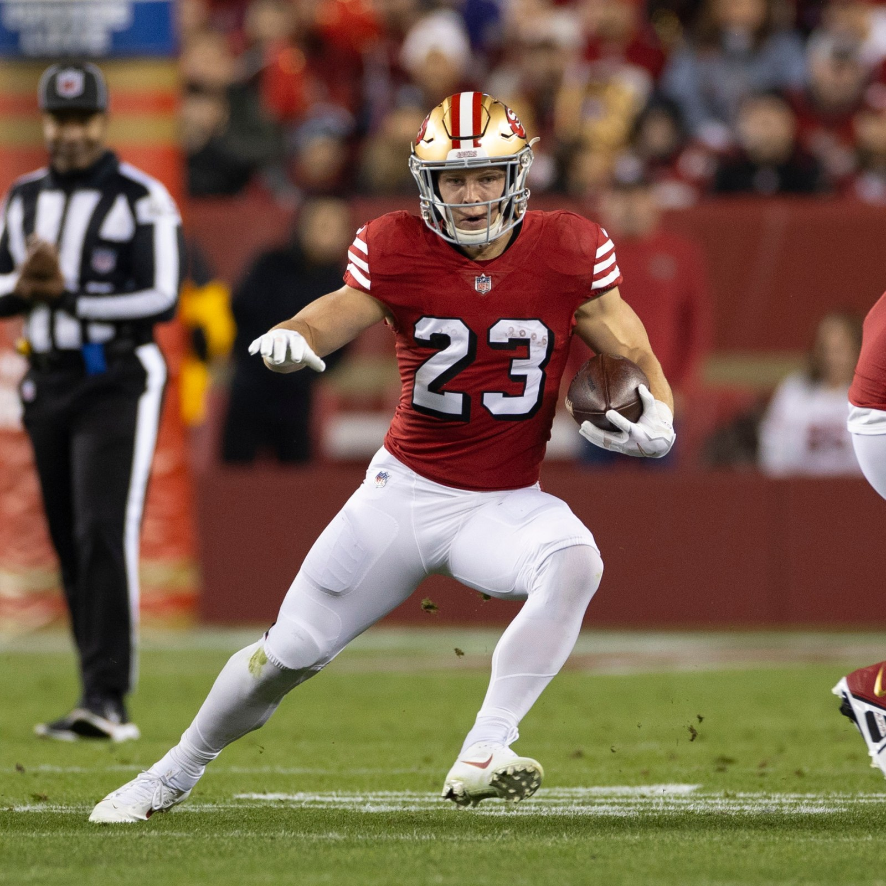
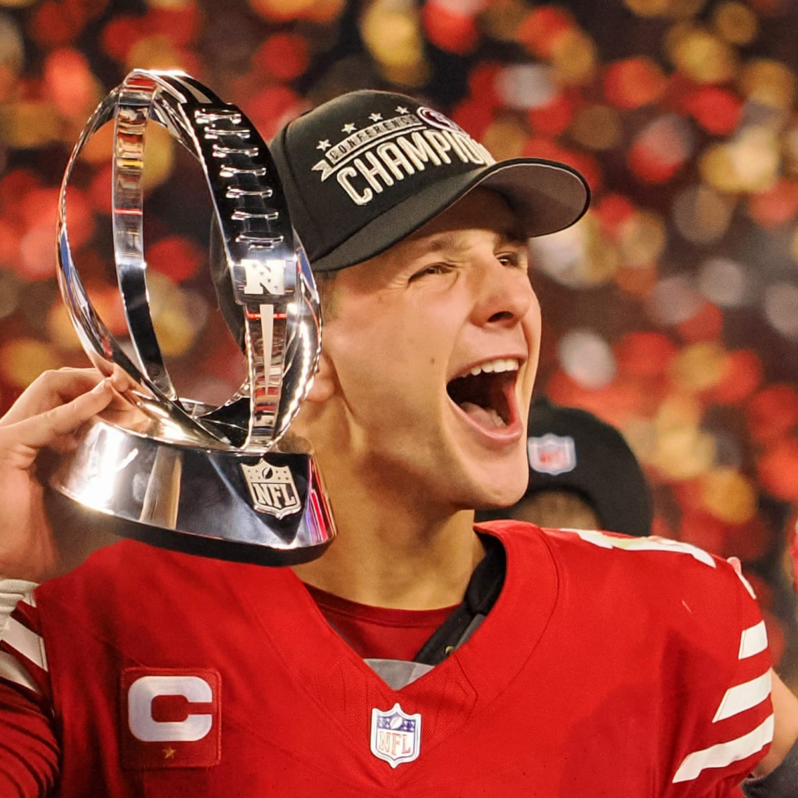
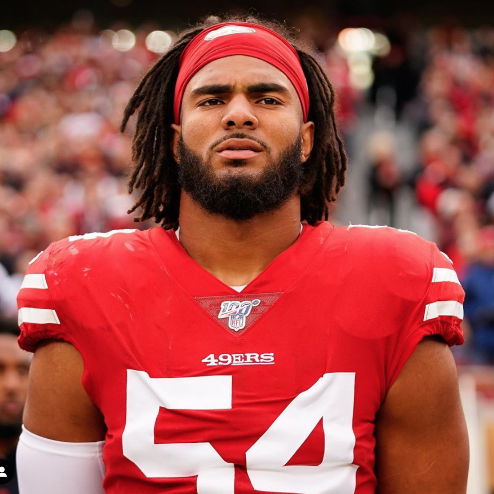
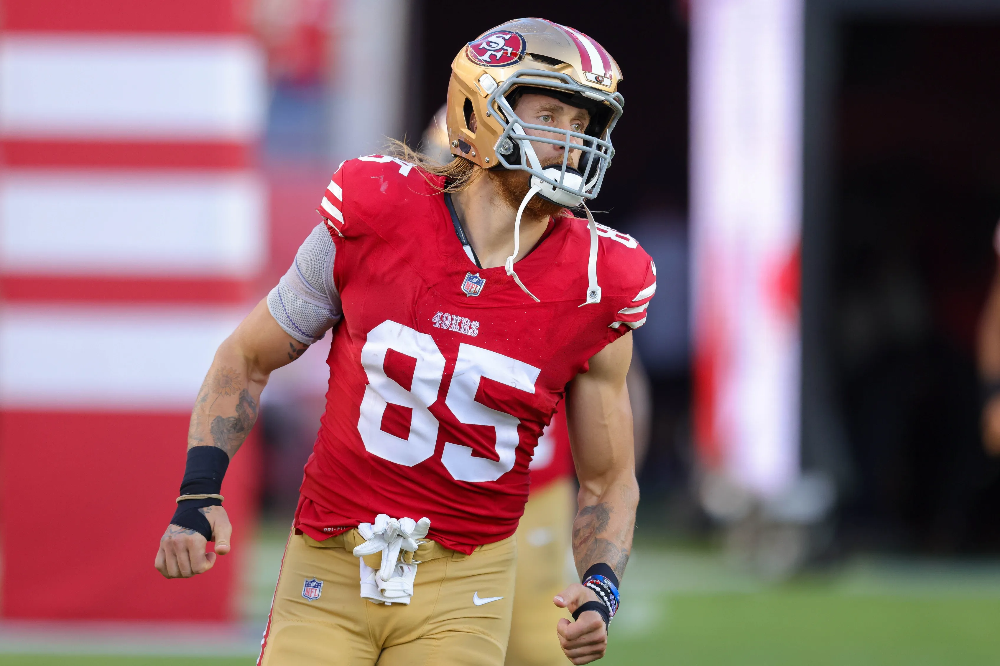
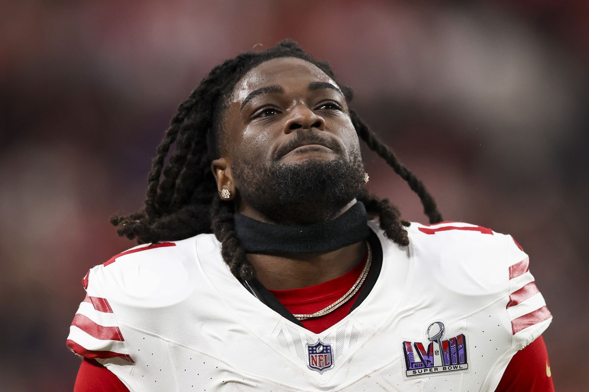

|  | MCaffrey asistió a Valor Christian High School en Highlands Ranch, Colorado. Allí jugó como running back, wide receiver, cornerback y punter, consiguiendo romper numerosos récords; mayor número de touchdowns (141), yardas ganadas (8,845), recepciones para touchdown (47) y yardas totales en una temporada (3,032). Todo esto le hizo merecedor del premio al Jugador del Año por Gatorade en los años 2012 y 2013 |
 | Brock Purdy (Queen Creek, Arizona, Estados Unidos; 27 de diciembre de 1999) es un jugador profesional de fútbol americano. Juega en la posición de quarterback y actualmente milita en los San Francisco 49ers de la National Football League (NFL). Jugó a nivel universitario cuatro años en Iowa State antes de ser elegido por los 49ers en el último puesto del Draft de la NFL de 2022, siendo el Mr. Irrelevant de ese año. |
 | Frederico Anthony Warner (nacido el 19 de noviembre de 1996) es un jugador profesional estadounidense de fútbol americano que juega en la posición de linebacker y actualmente milita en los San Francisco 49ers de la National Football League (NFL). Warner asistió a la preparatoria Mission Hills High School en San Marcos, California, donde practicó fútbol americano. Al finalizar la preparatoria, fue considerado como un atleta de cuatro estrellas y el 15.º mejor outside linebacker de la nación por Rivals.com.1 |
|---|
|  | George Krieger Kittle (nacido el 9 de octubre de 1993) es un tight end de fútbol americano que juega actualmente en los San Francisco 49ers de la Liga Nacional de Fútbol Americano (NFL). Jugó fútbol americano universitario para los Hawkeyes de la Universidad de Iowa y fue reclutado por los 49ers en la quinta ronda del Draft de la NFL de 2017. Ha sido seleccionado en cuatro ocasiones para la Pro Bowl (2019-2020-2022-2023) y fue All-Pro del primer equipo en 2019. |
 | Brandon Aiyuk (nacido el 17 de marzo de 1998) es un wide receiver de fútbol americano de los San Francisco 49ers de la Liga Nacional de Fútbol Americano (NFL). Jugó fútbol americano universitario en Sierra College y Arizona State y fue reclutado por los 49ers en la primera ronda del Draft de la NFL 2020 . |
|---|